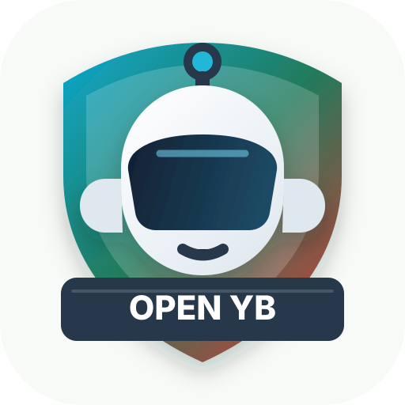

猫科狗决：四困青年的生存策略
1 00:00:00,000 --> 00:00:05,000 我们正在经历人类历史上最奇特的转折点。 2 00:00:05,000 --> 00:00:12,000 为什么现在亚洲年轻人养猫的越来越多，但养狗的人数却在下降？ 3 00:00:12,000 --> 00:00:18,000 狗一直是战友和守卫，它代表了一种契约。
请在微信客户端打开该链接
微信用户
元宝
1 00:00:00,000 --> 00:00:05,000 我们正在经历人类历史上最奇特的转折点。 2 00:00:05,000 --> 00:00:12,000 为什么现在亚洲年轻人养猫的越来越多，但养狗的人数却在下降？ 3 00:00:12,000 --> 00:00:18,000 狗一直是战友和守卫，它代表了一种契约。

不需要部署服务。插件会尝试直接打开和解析元宝分享页，并保留元宝原版显示。
收藏 3 篇。